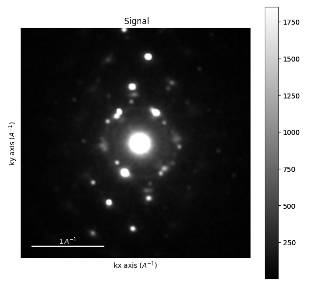
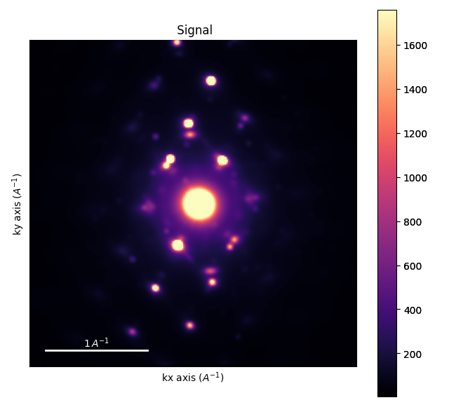
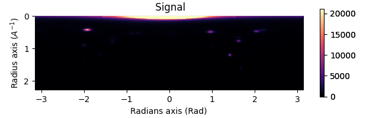
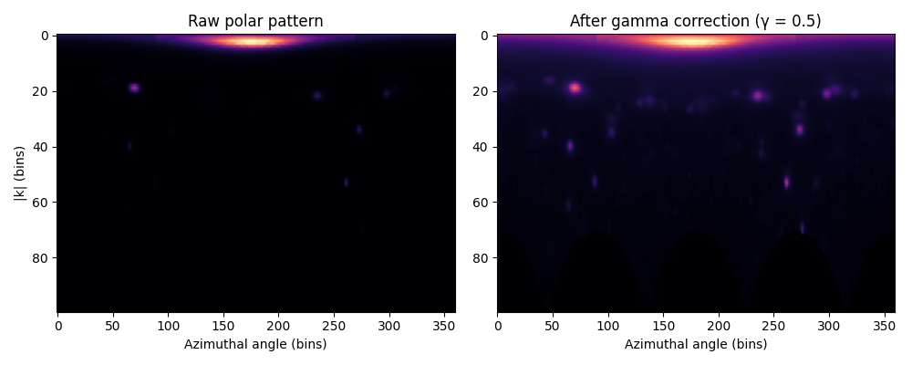
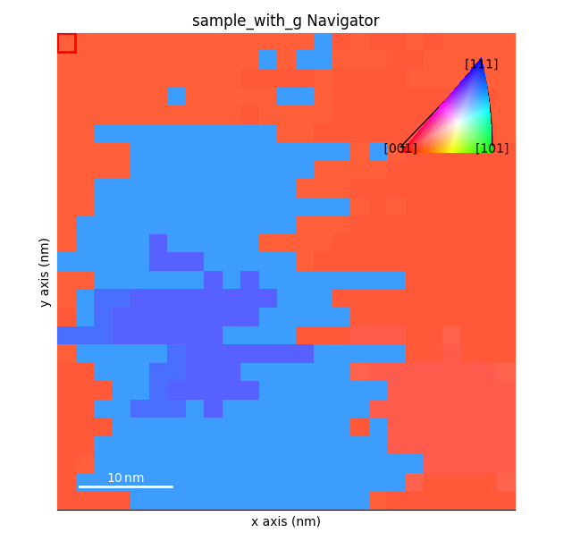
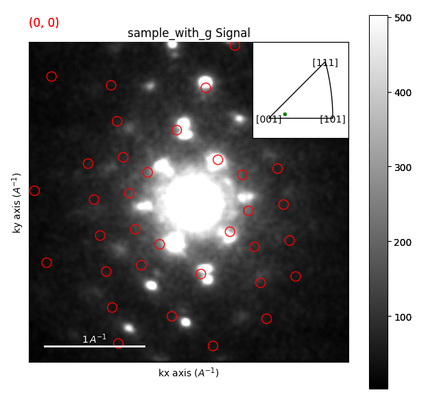
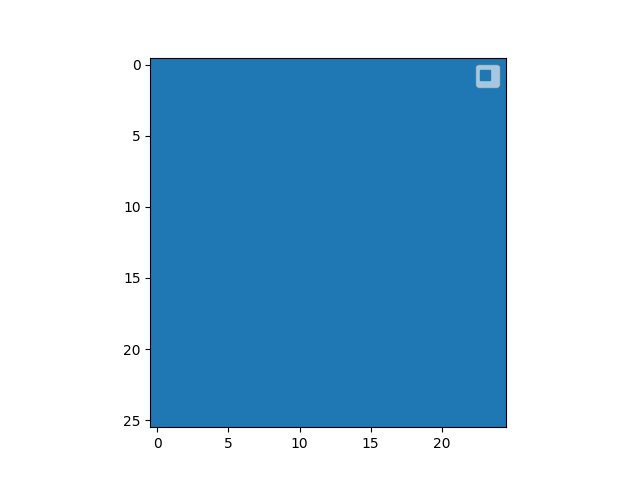

Note
Go to the end to download the full example code.
Orientation Mapping of Polycrystalline Silicon#
Orientation mapping in 4D-STEM determines the crystallographic orientation at every scan position across a polycrystalline or multi-grain sample. Unlike EBSD (which only samples the surface), 4D-STEM captures the full diffraction geometry and can resolve grains in bulk and thin specimens alike.
How it works: template matching in polar space#
The core idea is template matching:
Simulate diffraction patterns for every orientation in the crystal’s reduced fundamental zone (the irreducible wedge of orientation space for that point-group symmetry).
Convert both the experimental data and the library to polar coordinates
(|k|, φ)— this makes the comparison invariant to in-plane rotation and keeps memory use manageable.Cross-correlate each experimental polar pattern against every simulated template and record the best-matching orientation.
The result is an OrientationMap — a HyperSpy signal where each navigation
pixel stores the best-matching rotation, correlation score, and phase index.
This tutorial uses a real 4D-STEM dataset of Si thin film recorded at 200 kV with multiple overlapping grains at different orientations.
Dataset: https://zenodo.org/records/11284654 Reference: [CCAAnes+22]
import numpy as np
import matplotlib.pyplot as plt
import pyxem as pxm
from pyxem.data import si_phase, sample_with_g
from diffsims.generators.simulation_generator import SimulationGenerator
from orix.sampling import get_sample_reduced_fundamental
Loading the Data#
sample_with_g is a calibrated 4D-STEM dataset of a multi-grain Si thin
film. The scan is 25 × 26 real-space positions, each recording a
256 × 256 pixel diffraction pattern at 200 kV.
s = sample_with_g(allow_download=True)
print(s)
print(s.axes_manager)
0%| | 0.00/51.7M [00:00<?, ?B/s]
0%| | 12.3k/51.7M [00:00<08:16, 104kB/s]
0%| | 81.9k/51.7M [00:00<02:07, 407kB/s]
0%|▏ | 172k/51.7M [00:00<01:54, 450kB/s]
1%|▏ | 270k/51.7M [00:00<01:26, 595kB/s]
1%|▎ | 430k/51.7M [00:00<01:14, 692kB/s]
1%|▍ | 565k/51.7M [00:00<00:59, 855kB/s]
1%|▌ | 741k/51.7M [00:01<00:58, 868kB/s]
2%|▋ | 881k/51.7M [00:01<00:51, 988kB/s]
2%|▊ | 1.06M/51.7M [00:01<00:42, 1.20MB/s]
2%|▉ | 1.20M/51.7M [00:01<00:51, 978kB/s]
3%|▉ | 1.33M/51.7M [00:01<00:58, 869kB/s]
3%|█ | 1.50M/51.7M [00:01<00:48, 1.03MB/s]
3%|█▏ | 1.61M/51.7M [00:01<00:46, 1.07MB/s]
3%|█▎ | 1.76M/51.7M [00:02<00:53, 930kB/s]
4%|█▍ | 1.95M/51.7M [00:02<00:52, 953kB/s]
4%|█▍ | 2.08M/51.7M [00:02<00:48, 1.03MB/s]
4%|█▋ | 2.30M/51.7M [00:02<00:47, 1.04MB/s]
5%|█▊ | 2.46M/51.7M [00:02<00:51, 961kB/s]
5%|█▊ | 2.59M/51.7M [00:02<00:47, 1.03MB/s]
5%|██ | 2.80M/51.7M [00:03<00:46, 1.05MB/s]
6%|██▏ | 3.00M/51.7M [00:03<00:47, 1.03MB/s]
6%|██▏ | 3.14M/51.7M [00:03<00:43, 1.11MB/s]
6%|██▎ | 3.31M/51.7M [00:03<00:47, 1.01MB/s]
7%|██▌ | 3.49M/51.7M [00:03<00:49, 978kB/s]
7%|██▋ | 3.69M/51.7M [00:03<00:49, 980kB/s]
8%|██▊ | 3.90M/51.7M [00:04<00:47, 1.01MB/s]
8%|██▉ | 4.08M/51.7M [00:04<00:41, 1.16MB/s]
8%|███ | 4.21M/51.7M [00:04<00:48, 985kB/s]
9%|███▏ | 4.42M/51.7M [00:04<00:39, 1.21MB/s]
9%|███▎ | 4.56M/51.7M [00:04<00:46, 1.02MB/s]
9%|███▍ | 4.76M/51.7M [00:04<00:45, 1.03MB/s]
10%|███▌ | 4.93M/51.7M [00:05<00:40, 1.15MB/s]
10%|███▋ | 5.09M/51.7M [00:05<00:45, 1.03MB/s]
10%|███▋ | 5.24M/51.7M [00:05<00:41, 1.13MB/s]
10%|███▉ | 5.42M/51.7M [00:05<00:36, 1.27MB/s]
11%|███▉ | 5.56M/51.7M [00:05<00:43, 1.06MB/s]
11%|████ | 5.70M/51.7M [00:05<00:41, 1.12MB/s]
11%|████▏ | 5.91M/51.7M [00:05<00:41, 1.10MB/s]
12%|████▎ | 6.11M/51.7M [00:06<00:42, 1.06MB/s]
12%|████▍ | 6.26M/51.7M [00:06<00:39, 1.16MB/s]
12%|████▌ | 6.43M/51.7M [00:06<00:42, 1.06MB/s]
13%|████▋ | 6.57M/51.7M [00:06<00:40, 1.11MB/s]
13%|████▊ | 6.73M/51.7M [00:06<00:36, 1.22MB/s]
13%|████▉ | 6.91M/51.7M [00:06<00:40, 1.10MB/s]
14%|█████ | 7.09M/51.7M [00:06<00:43, 1.03MB/s]
14%|█████▏ | 7.33M/51.7M [00:07<00:40, 1.10MB/s]
15%|█████▎ | 7.51M/51.7M [00:07<00:42, 1.04MB/s]
15%|█████▌ | 7.71M/51.7M [00:07<00:43, 1.02MB/s]
15%|█████▋ | 7.91M/51.7M [00:07<00:43, 1.01MB/s]
16%|█████▊ | 8.09M/51.7M [00:07<00:37, 1.17MB/s]
16%|█████▉ | 8.23M/51.7M [00:08<00:42, 1.01MB/s]
16%|██████ | 8.45M/51.7M [00:08<00:41, 1.03MB/s]
17%|██████▏ | 8.61M/51.7M [00:08<00:37, 1.15MB/s]
17%|██████▎ | 8.84M/51.7M [00:08<00:37, 1.14MB/s]
18%|██████▍ | 9.07M/51.7M [00:08<00:30, 1.39MB/s]
18%|██████▌ | 9.23M/51.7M [00:08<00:36, 1.18MB/s]
18%|██████▋ | 9.41M/51.7M [00:09<00:39, 1.08MB/s]
18%|██████▊ | 9.56M/51.7M [00:09<00:35, 1.17MB/s]
19%|██████▉ | 9.74M/51.7M [00:09<00:39, 1.06MB/s]
19%|███████ | 9.93M/51.7M [00:09<00:33, 1.24MB/s]
19%|███████▏ | 10.1M/51.7M [00:09<00:39, 1.05MB/s]
20%|███████▎ | 10.3M/51.7M [00:09<00:40, 1.02MB/s]
20%|███████▌ | 10.5M/51.7M [00:10<00:36, 1.12MB/s]
21%|███████▋ | 10.7M/51.7M [00:10<00:32, 1.28MB/s]
21%|███████▊ | 10.9M/51.7M [00:10<00:36, 1.11MB/s]
22%|███████▉ | 11.1M/51.7M [00:10<00:35, 1.15MB/s]
22%|████████ | 11.3M/51.7M [00:10<00:34, 1.18MB/s]
22%|████████▏ | 11.4M/51.7M [00:10<00:31, 1.28MB/s]
22%|████████▎ | 11.6M/51.7M [00:10<00:30, 1.31MB/s]
23%|████████▍ | 11.7M/51.7M [00:11<00:34, 1.16MB/s]
23%|████████▌ | 11.9M/51.7M [00:11<00:32, 1.21MB/s]
23%|████████▋ | 12.1M/51.7M [00:11<00:35, 1.11MB/s]
24%|████████▋ | 12.2M/51.7M [00:11<00:33, 1.19MB/s]
24%|████████▊ | 12.4M/51.7M [00:11<00:37, 1.05MB/s]
24%|████████▉ | 12.5M/51.7M [00:11<00:36, 1.09MB/s]
25%|█████████ | 12.7M/51.7M [00:11<00:29, 1.33MB/s]
25%|█████████▏ | 12.9M/51.7M [00:11<00:28, 1.37MB/s]
25%|█████████▎ | 13.1M/51.7M [00:12<00:31, 1.22MB/s]
26%|█████████▍ | 13.2M/51.7M [00:12<00:30, 1.25MB/s]
26%|█████████▌ | 13.4M/51.7M [00:12<00:32, 1.17MB/s]
26%|█████████▋ | 13.6M/51.7M [00:12<00:30, 1.24MB/s]
27%|█████████▊ | 13.8M/51.7M [00:12<00:25, 1.48MB/s]
27%|█████████▉ | 13.9M/51.7M [00:12<00:31, 1.21MB/s]
27%|██████████ | 14.1M/51.7M [00:13<00:34, 1.08MB/s]
28%|██████████▏ | 14.3M/51.7M [00:13<00:30, 1.23MB/s]
28%|██████████▎ | 14.5M/51.7M [00:13<00:27, 1.34MB/s]
28%|██████████▍ | 14.7M/51.7M [00:13<00:31, 1.19MB/s]
29%|██████████▋ | 14.9M/51.7M [00:13<00:29, 1.24MB/s]
29%|██████████▊ | 15.1M/51.7M [00:13<00:27, 1.32MB/s]
29%|██████████▉ | 15.2M/51.7M [00:13<00:27, 1.34MB/s]
30%|███████████ | 15.4M/51.7M [00:14<00:30, 1.17MB/s]
30%|███████████▏ | 15.6M/51.7M [00:14<00:32, 1.11MB/s]
30%|███████████▎ | 15.7M/51.7M [00:14<00:31, 1.15MB/s]
31%|███████████▍ | 16.0M/51.7M [00:14<00:31, 1.15MB/s]
31%|███████████▌ | 16.1M/51.7M [00:14<00:30, 1.18MB/s]
31%|███████████▋ | 16.3M/51.7M [00:14<00:26, 1.35MB/s]
32%|███████████▊ | 16.4M/51.7M [00:14<00:25, 1.38MB/s]
32%|███████████▊ | 16.6M/51.7M [00:15<00:31, 1.12MB/s]
32%|███████████▉ | 16.8M/51.7M [00:15<00:33, 1.05MB/s]
33%|████████████ | 16.9M/51.7M [00:15<00:30, 1.14MB/s]
33%|████████████▎ | 17.1M/51.7M [00:15<00:31, 1.11MB/s]
33%|████████████▍ | 17.3M/51.7M [00:15<00:27, 1.25MB/s]
34%|████████████▌ | 17.6M/51.7M [00:15<00:27, 1.25MB/s]
34%|████████████▋ | 17.7M/51.7M [00:15<00:24, 1.39MB/s]
35%|████████████▊ | 17.9M/51.7M [00:16<00:27, 1.25MB/s]
35%|████████████▉ | 18.2M/51.7M [00:16<00:28, 1.19MB/s]
35%|█████████████ | 18.3M/51.7M [00:16<00:26, 1.24MB/s]
36%|█████████████▏ | 18.5M/51.7M [00:16<00:23, 1.44MB/s]
36%|█████████████▎ | 18.7M/51.7M [00:16<00:27, 1.20MB/s]
36%|█████████████▍ | 18.8M/51.7M [00:16<00:26, 1.23MB/s]
37%|█████████████▌ | 19.0M/51.7M [00:17<00:27, 1.17MB/s]
37%|█████████████▋ | 19.2M/51.7M [00:17<00:24, 1.31MB/s]
38%|█████████████▉ | 19.4M/51.7M [00:17<00:26, 1.21MB/s]
38%|██████████████ | 19.6M/51.7M [00:17<00:24, 1.29MB/s]
38%|██████████████▏ | 19.8M/51.7M [00:17<00:26, 1.18MB/s]
39%|██████████████▎ | 20.0M/51.7M [00:17<00:27, 1.17MB/s]
39%|██████████████▍ | 20.1M/51.7M [00:17<00:26, 1.20MB/s]
39%|██████████████▌ | 20.3M/51.7M [00:18<00:29, 1.06MB/s]
40%|██████████████▋ | 20.5M/51.7M [00:18<00:26, 1.18MB/s]
40%|██████████████▊ | 20.7M/51.7M [00:18<00:27, 1.11MB/s]
40%|██████████████▉ | 20.8M/51.7M [00:18<00:24, 1.25MB/s]
41%|███████████████ | 21.0M/51.7M [00:18<00:24, 1.28MB/s]
41%|███████████████ | 21.1M/51.7M [00:18<00:23, 1.31MB/s]
41%|███████████████▏ | 21.3M/51.7M [00:18<00:27, 1.12MB/s]
41%|███████████████▎ | 21.4M/51.7M [00:19<00:26, 1.14MB/s]
42%|███████████████▍ | 21.6M/51.7M [00:19<00:28, 1.06MB/s]
42%|███████████████▌ | 21.7M/51.7M [00:19<00:27, 1.08MB/s]
42%|███████████████▋ | 21.9M/51.7M [00:19<00:23, 1.29MB/s]
43%|███████████████▊ | 22.1M/51.7M [00:19<00:24, 1.20MB/s]
43%|███████████████▉ | 22.3M/51.7M [00:19<00:23, 1.27MB/s]
44%|████████████████ | 22.5M/51.7M [00:19<00:23, 1.25MB/s]
44%|████████████████▎ | 22.7M/51.7M [00:20<00:24, 1.18MB/s]
44%|████████████████▎ | 22.9M/51.7M [00:20<00:22, 1.28MB/s]
45%|████████████████▍ | 23.0M/51.7M [00:20<00:26, 1.08MB/s]
45%|████████████████▌ | 23.2M/51.7M [00:20<00:24, 1.15MB/s]
45%|████████████████▊ | 23.4M/51.7M [00:20<00:23, 1.19MB/s]
46%|████████████████▊ | 23.6M/51.7M [00:20<00:23, 1.21MB/s]
46%|████████████████▉ | 23.8M/51.7M [00:21<00:24, 1.16MB/s]
46%|█████████████████ | 23.9M/51.7M [00:21<00:22, 1.22MB/s]
47%|█████████████████▏ | 24.1M/51.7M [00:21<00:24, 1.11MB/s]
47%|█████████████████▎ | 24.2M/51.7M [00:21<00:23, 1.15MB/s]
47%|█████████████████▍ | 24.5M/51.7M [00:21<00:23, 1.15MB/s]
48%|█████████████████▋ | 24.7M/51.7M [00:21<00:19, 1.40MB/s]
48%|█████████████████▊ | 24.9M/51.7M [00:21<00:20, 1.30MB/s]
49%|█████████████████▉ | 25.1M/51.7M [00:22<00:18, 1.43MB/s]
49%|██████████████████ | 25.3M/51.7M [00:22<00:22, 1.19MB/s]
49%|██████████████████▏ | 25.4M/51.7M [00:22<00:20, 1.28MB/s]
49%|██████████████████▎ | 25.6M/51.7M [00:22<00:22, 1.14MB/s]
50%|██████████████████▍ | 25.7M/51.7M [00:22<00:22, 1.17MB/s]
50%|██████████████████▍ | 25.9M/51.7M [00:22<00:21, 1.19MB/s]
50%|██████████████████▌ | 26.0M/51.7M [00:22<00:24, 1.05MB/s]
51%|███████████████████▏ | 26.2M/51.7M [00:23<00:26, 972kB/s]
51%|██████████████████▊ | 26.3M/51.7M [00:23<00:24, 1.04MB/s]
51%|███████████████████▍ | 26.5M/51.7M [00:23<00:26, 961kB/s]
51%|███████████████████ | 26.6M/51.7M [00:23<00:23, 1.07MB/s]
52%|███████████████████▏ | 26.8M/51.7M [00:23<00:19, 1.30MB/s]
52%|███████████████████▎ | 27.0M/51.7M [00:23<00:22, 1.09MB/s]
52%|███████████████████▍ | 27.1M/51.7M [00:23<00:21, 1.13MB/s]
53%|███████████████████▌ | 27.3M/51.7M [00:24<00:19, 1.27MB/s]
53%|███████████████████▌ | 27.4M/51.7M [00:24<00:23, 1.04MB/s]
53%|███████████████████▋ | 27.5M/51.7M [00:24<00:22, 1.07MB/s]
54%|███████████████████▊ | 27.8M/51.7M [00:24<00:22, 1.06MB/s]
54%|███████████████████▉ | 27.9M/51.7M [00:24<00:21, 1.11MB/s]
54%|████████████████████ | 28.0M/51.7M [00:24<00:23, 1.00MB/s]
54%|████████████████████▏ | 28.2M/51.7M [00:24<00:22, 1.06MB/s]
55%|████████████████████▎ | 28.4M/51.7M [00:25<00:18, 1.28MB/s]
55%|████████████████████▍ | 28.5M/51.7M [00:25<00:22, 1.05MB/s]
55%|████████████████████▌ | 28.7M/51.7M [00:25<00:18, 1.22MB/s]
56%|████████████████████▌ | 28.8M/51.7M [00:25<00:18, 1.27MB/s]
56%|████████████████████▋ | 29.0M/51.7M [00:25<00:17, 1.30MB/s]
56%|████████████████████▊ | 29.2M/51.7M [00:25<00:19, 1.18MB/s]
57%|████████████████████▉ | 29.4M/51.7M [00:25<00:16, 1.33MB/s]
57%|█████████████████████▏ | 29.7M/51.7M [00:26<00:15, 1.42MB/s]
58%|█████████████████████▎ | 29.8M/51.7M [00:26<00:15, 1.43MB/s]
58%|█████████████████████▍ | 30.0M/51.7M [00:26<00:17, 1.22MB/s]
58%|█████████████████████▌ | 30.2M/51.7M [00:26<00:15, 1.39MB/s]
59%|█████████████████████▊ | 30.4M/51.7M [00:26<00:16, 1.29MB/s]
59%|█████████████████████▊ | 30.6M/51.7M [00:26<00:15, 1.33MB/s]
59%|█████████████████████▉ | 30.7M/51.7M [00:26<00:15, 1.39MB/s]
60%|██████████████████████ | 30.9M/51.7M [00:27<00:17, 1.21MB/s]
60%|██████████████████████▏ | 31.0M/51.7M [00:27<00:16, 1.23MB/s]
60%|██████████████████████▎ | 31.2M/51.7M [00:27<00:15, 1.29MB/s]
61%|██████████████████████▍ | 31.3M/51.7M [00:27<00:19, 1.05MB/s]
61%|██████████████████████▌ | 31.5M/51.7M [00:27<00:20, 1.01MB/s]
61%|██████████████████████▋ | 31.7M/51.7M [00:27<00:17, 1.16MB/s]
62%|██████████████████████▊ | 31.9M/51.7M [00:27<00:18, 1.08MB/s]
62%|██████████████████████▉ | 32.0M/51.7M [00:28<00:16, 1.20MB/s]
62%|███████████████████████ | 32.2M/51.7M [00:28<00:18, 1.08MB/s]
63%|███████████████████████▏ | 32.4M/51.7M [00:28<00:16, 1.20MB/s]
63%|███████████████████████▎ | 32.6M/51.7M [00:28<00:17, 1.12MB/s]
63%|███████████████████████▍ | 32.8M/51.7M [00:28<00:15, 1.25MB/s]
64%|███████████████████████▌ | 32.9M/51.7M [00:28<00:13, 1.39MB/s]
64%|███████████████████████▋ | 33.1M/51.7M [00:28<00:16, 1.15MB/s]
64%|███████████████████████▊ | 33.3M/51.7M [00:29<00:14, 1.28MB/s]
65%|███████████████████████▉ | 33.4M/51.7M [00:29<00:17, 1.07MB/s]
65%|████████████████████████ | 33.6M/51.7M [00:29<00:16, 1.07MB/s]
65%|████████████████████████▏ | 33.8M/51.7M [00:29<00:14, 1.21MB/s]
66%|████████████████████████▎ | 34.0M/51.7M [00:29<00:12, 1.38MB/s]
66%|████████████████████████▍ | 34.2M/51.7M [00:29<00:13, 1.25MB/s]
66%|████████████████████████▌ | 34.4M/51.7M [00:29<00:12, 1.37MB/s]
67%|████████████████████████▋ | 34.5M/51.7M [00:30<00:12, 1.41MB/s]
67%|████████████████████████▊ | 34.7M/51.7M [00:30<00:14, 1.15MB/s]
68%|█████████████████████████ | 35.0M/51.7M [00:30<00:11, 1.47MB/s]
68%|█████████████████████████▏ | 35.1M/51.7M [00:30<00:13, 1.24MB/s]
68%|█████████████████████████▏ | 35.3M/51.7M [00:30<00:12, 1.29MB/s]
69%|█████████████████████████▎ | 35.4M/51.7M [00:30<00:14, 1.10MB/s]
69%|█████████████████████████▍ | 35.6M/51.7M [00:30<00:14, 1.15MB/s]
69%|█████████████████████████▌ | 35.7M/51.7M [00:31<00:13, 1.19MB/s]
69%|█████████████████████████▋ | 35.9M/51.7M [00:31<00:14, 1.11MB/s]
70%|█████████████████████████▊ | 36.0M/51.7M [00:31<00:13, 1.13MB/s]
70%|█████████████████████████▉ | 36.2M/51.7M [00:31<00:15, 1.02MB/s]
70%|█████████████████████████▉ | 36.3M/51.7M [00:31<00:13, 1.14MB/s]
71%|██████████████████████████▏ | 36.6M/51.7M [00:31<00:13, 1.10MB/s]
71%|██████████████████████████▏ | 36.7M/51.7M [00:31<00:13, 1.15MB/s]
71%|██████████████████████████▍ | 36.9M/51.7M [00:32<00:13, 1.08MB/s]
72%|██████████████████████████▍ | 37.0M/51.7M [00:32<00:13, 1.10MB/s]
72%|██████████████████████████▌ | 37.2M/51.7M [00:32<00:11, 1.27MB/s]
72%|██████████████████████████▋ | 37.3M/51.7M [00:32<00:11, 1.30MB/s]
72%|██████████████████████████▊ | 37.5M/51.7M [00:32<00:12, 1.11MB/s]
73%|██████████████████████████▉ | 37.6M/51.7M [00:32<00:12, 1.13MB/s]
73%|███████████████████████████ | 37.8M/51.7M [00:32<00:10, 1.36MB/s]
73%|███████████████████████████▏ | 38.0M/51.7M [00:32<00:09, 1.38MB/s]
74%|███████████████████████████▎ | 38.1M/51.7M [00:33<00:11, 1.15MB/s]
74%|███████████████████████████▎ | 38.3M/51.7M [00:33<00:11, 1.19MB/s]
74%|███████████████████████████▍ | 38.4M/51.7M [00:33<00:10, 1.29MB/s]
75%|███████████████████████████▌ | 38.6M/51.7M [00:33<00:11, 1.13MB/s]
75%|███████████████████████████▋ | 38.7M/51.7M [00:33<00:11, 1.16MB/s]
75%|███████████████████████████▊ | 38.9M/51.7M [00:33<00:12, 1.07MB/s]
76%|████████████████████████████ | 39.2M/51.7M [00:33<00:09, 1.38MB/s]
76%|████████████████████████████▏ | 39.4M/51.7M [00:34<00:10, 1.23MB/s]
76%|████████████████████████████▎ | 39.5M/51.7M [00:34<00:09, 1.35MB/s]
77%|████████████████████████████▍ | 39.7M/51.7M [00:34<00:09, 1.21MB/s]
77%|████████████████████████████▌ | 39.9M/51.7M [00:34<00:10, 1.10MB/s]
77%|████████████████████████████▋ | 40.0M/51.7M [00:34<00:10, 1.14MB/s]
78%|████████████████████████████▋ | 40.2M/51.7M [00:34<00:09, 1.23MB/s]
78%|████████████████████████████▊ | 40.4M/51.7M [00:34<00:08, 1.36MB/s]
78%|████████████████████████████▉ | 40.5M/51.7M [00:35<00:10, 1.10MB/s]
79%|█████████████████████████████ | 40.7M/51.7M [00:35<00:09, 1.17MB/s]
79%|█████████████████████████████▏ | 40.8M/51.7M [00:35<00:10, 1.01MB/s]
79%|█████████████████████████████▎ | 41.0M/51.7M [00:35<00:09, 1.17MB/s]
80%|█████████████████████████████▍ | 41.1M/51.7M [00:35<00:10, 1.02MB/s]
80%|█████████████████████████████▌ | 41.3M/51.7M [00:35<00:09, 1.14MB/s]
80%|█████████████████████████████▋ | 41.5M/51.7M [00:35<00:09, 1.06MB/s]
80%|█████████████████████████████▊ | 41.6M/51.7M [00:36<00:09, 1.09MB/s]
81%|█████████████████████████████▉ | 41.8M/51.7M [00:36<00:06, 1.42MB/s]
81%|██████████████████████████████ | 42.0M/51.7M [00:36<00:08, 1.17MB/s]
82%|██████████████████████████████▏ | 42.2M/51.7M [00:36<00:08, 1.12MB/s]
82%|██████████████████████████████▎ | 42.4M/51.7M [00:36<00:07, 1.20MB/s]
82%|██████████████████████████████▍ | 42.5M/51.7M [00:36<00:08, 1.08MB/s]
83%|██████████████████████████████▌ | 42.7M/51.7M [00:36<00:07, 1.16MB/s]
83%|██████████████████████████████▋ | 42.9M/51.7M [00:37<00:08, 1.07MB/s]
83%|██████████████████████████████▊ | 43.0M/51.7M [00:37<00:07, 1.13MB/s]
83%|██████████████████████████████▉ | 43.2M/51.7M [00:37<00:07, 1.07MB/s]
84%|███████████████████████████████ | 43.4M/51.7M [00:37<00:07, 1.19MB/s]
84%|███████████████████████████████ | 43.5M/51.7M [00:37<00:06, 1.22MB/s]
85%|███████████████████████████████▎ | 43.7M/51.7M [00:37<00:06, 1.22MB/s]
85%|███████████████████████████████▍ | 43.9M/51.7M [00:37<00:06, 1.26MB/s]
85%|███████████████████████████████▌ | 44.1M/51.7M [00:38<00:06, 1.14MB/s]
86%|███████████████████████████████▋ | 44.3M/51.7M [00:38<00:05, 1.32MB/s]
86%|███████████████████████████████▊ | 44.4M/51.7M [00:38<00:06, 1.13MB/s]
86%|███████████████████████████████▊ | 44.5M/51.7M [00:38<00:06, 1.16MB/s]
86%|███████████████████████████████▉ | 44.7M/51.7M [00:38<00:06, 1.03MB/s]
87%|████████████████████████████████ | 44.9M/51.7M [00:38<00:05, 1.20MB/s]
87%|████████████████████████████████▏ | 45.0M/51.7M [00:39<00:06, 1.00MB/s]
87%|████████████████████████████████▎ | 45.2M/51.7M [00:39<00:06, 1.02MB/s]
88%|████████████████████████████████▍ | 45.4M/51.7M [00:39<00:06, 1.04MB/s]
88%|████████████████████████████████▌ | 45.6M/51.7M [00:39<00:05, 1.08MB/s]
88%|████████████████████████████████▋ | 45.7M/51.7M [00:39<00:05, 1.10MB/s]
89%|████████████████████████████████▉ | 46.1M/51.7M [00:39<00:04, 1.36MB/s]
89%|█████████████████████████████████ | 46.2M/51.7M [00:39<00:03, 1.48MB/s]
90%|█████████████████████████████████▏ | 46.4M/51.7M [00:40<00:03, 1.48MB/s]
90%|█████████████████████████████████▎ | 46.6M/51.7M [00:40<00:04, 1.22MB/s]
90%|█████████████████████████████████▍ | 46.7M/51.7M [00:40<00:03, 1.35MB/s]
91%|█████████████████████████████████▌ | 46.9M/51.7M [00:40<00:03, 1.20MB/s]
91%|█████████████████████████████████▋ | 47.1M/51.7M [00:40<00:03, 1.23MB/s]
91%|█████████████████████████████████▊ | 47.3M/51.7M [00:40<00:03, 1.23MB/s]
92%|█████████████████████████████████▉ | 47.4M/51.7M [00:40<00:03, 1.26MB/s]
92%|██████████████████████████████████▏ | 47.7M/51.7M [00:41<00:03, 1.30MB/s]
93%|██████████████████████████████████▏ | 47.9M/51.7M [00:41<00:02, 1.33MB/s]
93%|██████████████████████████████████▍ | 48.1M/51.7M [00:41<00:03, 1.21MB/s]
93%|██████████████████████████████████▍ | 48.2M/51.7M [00:41<00:02, 1.22MB/s]
93%|██████████████████████████████████▌ | 48.3M/51.7M [00:41<00:02, 1.23MB/s]
94%|██████████████████████████████████▋ | 48.5M/51.7M [00:41<00:02, 1.40MB/s]
94%|██████████████████████████████████▊ | 48.7M/51.7M [00:41<00:02, 1.12MB/s]
95%|██████████████████████████████████▉ | 48.9M/51.7M [00:42<00:01, 1.42MB/s]
95%|███████████████████████████████████ | 49.1M/51.7M [00:42<00:02, 1.19MB/s]
95%|███████████████████████████████████▏ | 49.3M/51.7M [00:42<00:01, 1.41MB/s]
96%|███████████████████████████████████▎ | 49.4M/51.7M [00:42<00:01, 1.47MB/s]
96%|███████████████████████████████████▍ | 49.6M/51.7M [00:42<00:01, 1.20MB/s]
96%|███████████████████████████████████▌ | 49.8M/51.7M [00:42<00:01, 1.24MB/s]
96%|███████████████████████████████████▋ | 49.9M/51.7M [00:42<00:01, 1.28MB/s]
97%|███████████████████████████████████▉ | 50.2M/51.7M [00:43<00:01, 1.41MB/s]
97%|████████████████████████████████████ | 50.4M/51.7M [00:43<00:00, 1.51MB/s]
98%|████████████████████████████████████▏| 50.6M/51.7M [00:43<00:00, 1.53MB/s]
98%|████████████████████████████████████▎| 50.8M/51.7M [00:43<00:00, 1.90MB/s]
99%|████████████████████████████████████▌| 51.0M/51.7M [00:43<00:00, 1.92MB/s]
99%|████████████████████████████████████▋| 51.2M/51.7M [00:43<00:00, 1.52MB/s]
99%|████████████████████████████████████▊| 51.4M/51.7M [00:43<00:00, 1.27MB/s]
100%|████████████████████████████████████▉| 51.6M/51.7M [00:43<00:00, 1.36MB/s]
0%| | 0.00/51.7M [00:00<?, ?B/s]
100%|██████████████████████████████████████| 51.7M/51.7M [00:00<00:00, 170GB/s]
<ElectronDiffraction2D, title: , dimensions: (25, 26|256, 256)>
<Axes manager, axes: (25, 26|256, 256)>
Name | size | index | offset | scale | units
================ | ====== | ====== | ======= | ======= | ======
x | 25 | 0 | 3e+02 | 2 | nm
y | 26 | 0 | 1.9e+02 | 2 | nm
---------------- | ------ | ------ | ------- | ------- | ------
kx | 256 | 0 | -1.6 | 0.013 | $A^{-1}$
ky | 256 | 0 | -1.6 | 0.013 | $A^{-1}$
Plot a single diffraction pattern from the centre of the scan. You should see sharp Si diffraction spots with clear crystal symmetry.
s.inav[13, 12].plot(vmax="99th")

Plot the mean diffraction pattern across all scan positions. Because multiple grain orientations are averaged together the pattern looks like a powder ring, but individual spots are still visible in single patterns.

Pre-Processing: Centring the Direct Beam#
The centre of the diffraction pattern must coincide with the zero-beam
(transmitted beam) position. calibration.center = None auto-detects
the centre by finding the brightest pixel and centering the axes offsets.
Accurate centering is critical: a shift of even one pixel translates into an orientation error, because the cross-correlation treats the polar-space radius as the scattering vector magnitude.
s.calibration.center = None
print("Signal axes after centring:")
print(s.axes_manager)
Signal axes after centring:
<Axes manager, axes: (25, 26|256, 256)>
Name | size | index | offset | scale | units
================ | ====== | ====== | ======= | ======= | ======
x | 25 | 0 | 3e+02 | 2 | nm
y | 26 | 0 | 1.9e+02 | 2 | nm
---------------- | ------ | ------ | ------- | ------- | ------
kx | 256 | 0 | -1.6 | 0.013 | $A^{-1}$
ky | 256 | 0 | -1.6 | 0.013 | $A^{-1}$
Azimuthal Integration to Polar Coordinates#
get_azimuthal_integral2d re-bins each diffraction pattern into polar
coordinates (|k|, φ). Key parameters:
npt: number of radial bins. More bins = finer |k| resolution, but also more memory. 100 is a good default for orientation mapping.npt_azim: number of azimuthal bins. 360 gives 1° resolution. Increasing this improves angular sensitivity at the cost of compute time.mean=True: return the mean pixel value per bin rather than the sum. This equalises the weight of inner and outer rings, making high-|k| reflections visible alongside the bright low-|k| spots.
polar = s.get_azimuthal_integral2d(
npt=100,
npt_azim=360,
inplace=False,
mean=True,
)
print(polar)
0%| | 0/31 [00:00<?, ?it/s]
3%|▎ | 1/31 [00:09<04:46, 9.54s/it]
6%|▋ | 2/31 [00:09<01:57, 4.06s/it]
10%|▉ | 3/31 [00:09<01:03, 2.27s/it]
13%|█▎ | 4/31 [00:10<00:40, 1.50s/it]
16%|█▌ | 5/31 [00:19<01:48, 4.17s/it]
19%|█▉ | 6/31 [00:57<06:38, 15.96s/it]
23%|██▎ | 7/31 [00:58<04:23, 10.99s/it]
26%|██▌ | 8/31 [00:59<02:56, 7.70s/it]
29%|██▉ | 9/31 [01:08<02:56, 8.03s/it]
32%|███▏ | 10/31 [01:46<06:04, 17.37s/it]
35%|███▌ | 11/31 [01:48<04:12, 12.60s/it]
39%|███▊ | 12/31 [01:48<02:50, 8.99s/it]
42%|████▏ | 13/31 [01:56<02:33, 8.53s/it]
45%|████▌ | 14/31 [02:35<04:59, 17.62s/it]
48%|████▊ | 15/31 [02:35<03:20, 12.55s/it]
52%|█████▏ | 16/31 [02:37<02:20, 9.38s/it]
55%|█████▍ | 17/31 [02:45<02:04, 8.87s/it]
58%|█████▊ | 18/31 [03:23<03:49, 17.69s/it]
61%|██████▏ | 19/31 [03:24<02:32, 12.73s/it]
65%|██████▍ | 20/31 [03:25<01:40, 9.12s/it]
68%|██████▊ | 21/31 [03:34<01:31, 9.13s/it]
71%|███████ | 22/31 [04:12<02:38, 17.60s/it]
74%|███████▍ | 23/31 [04:14<01:43, 12.88s/it]
77%|███████▋ | 24/31 [04:14<01:04, 9.23s/it]
81%|████████ | 25/31 [04:22<00:52, 8.79s/it]
84%|████████▍ | 26/31 [05:01<01:29, 17.90s/it]
87%|████████▋ | 27/31 [05:02<00:51, 12.87s/it]
90%|█████████ | 28/31 [05:03<00:27, 9.24s/it]
94%|█████████▎| 29/31 [05:07<00:15, 7.53s/it]
97%|█████████▋| 30/31 [05:16<00:08, 8.24s/it]
100%|██████████| 31/31 [05:16<00:00, 10.23s/it]
<PolarDiffraction2D, title: , dimensions: (25, 26|360, 100)>
Plot the mean polar pattern. The x-axis is azimuthal angle (0–360°) and the y-axis is scattering vector magnitude |k|. The bright horizontal bands correspond to the Si ring positions.

Building the Simulation Library#
We need a simulated diffraction pattern for every orientation in the reduced fundamental zone of Si (point group m-3m, cubic).
Sampling orientation space
get_sample_reduced_fundamental(resolution=1, point_group=...) returns a
uniform grid of rotations covering the irreducible wedge. resolution=1
means one rotation per degree — giving ~136 rotations for cubic symmetry.
Finer grids (e.g. resolution=0.5) give better accuracy but are slower.
phase = si_phase()
print(f"Phase: Silicon, space group: {phase.space_group.short_name}")
print(f"Point group: {phase.point_group.name}, a = {phase.structure.lattice.a:.4f} Å")
rotations = get_sample_reduced_fundamental(
resolution=1,
point_group=phase.point_group,
)
print(f"Number of orientations sampled: {rotations.size}")
Phase: Silicon, space group: Fd-3m
Point group: m-3m, a = 5.4310 Å
Number of orientations sampled: 1081
Simulation parameters
SimulationGenerator uses the kinematical (single-scattering) approximation
to compute structure factors and diffraction spot intensities.
accelerating_voltage=200: beam energy in kV. Affects the Ewald sphere radius and therefore which reflections are excited.minimum_intensity=0.05: discard reflections weaker than 5% of the strongest reflection. This removes many forbidden and very weak spots that would add noise to the template library without improving matching.
calculate_diffraction2d parameters:
max_excitation_error=0.1: the maximum deviation from the Bragg condition (in reciprocal Å) at which a reflection is still included. Larger values = more spots per pattern = better match for tilted grains. 0.1 Å⁻¹ is a good default for thin TEM samples.reciprocal_radius=2: only simulate reflections within 2 Å⁻¹ of the origin (matching the detector range of the experimental data).with_direct_beam=False: always exclude the transmitted beam. Including it would make the cross-correlation dominated by the bright centre spot, which carries no orientation information.
generator = SimulationGenerator(
accelerating_voltage=200,
minimum_intensity=0.05,
)
sim = generator.calculate_diffraction2d(
phase,
rotation=rotations,
max_excitation_error=0.1,
reciprocal_radius=2,
with_direct_beam=False,
)
print(f"Simulation library built for {rotations.size} orientations.")
Simulation library built for 1081 orientations.
Gamma Correction#
Before matching, we apply a gamma correction to the polar signal:
Why? In a raw diffraction pattern the central/low-|k| spots are orders of magnitude brighter than the outer reflections. The cross-correlation would then be dominated by these bright spots, ignoring the rich angular information in the weaker high-|k| reflections.
Raising the pattern to the power 0.5 (square root) compresses the dynamic range, giving the fainter spots more influence without discarding them. You can tune this exponent: lower values weight weak spots more heavily, higher values (closer to 1) preserve the natural intensity hierarchy. For noisy data, background subtraction before gamma correction often helps.
polar_gamma = polar**0.5
# Visualise the effect of gamma correction on a single pattern.
fig, (ax1, ax2) = plt.subplots(1, 2, figsize=(10, 4))
ax1.imshow(polar.inav[13, 12].data, aspect="auto", cmap="magma")
ax1.set_title("Raw polar pattern")
ax1.set_xlabel("Azimuthal angle (bins)")
ax1.set_ylabel("|k| (bins)")
ax2.imshow(polar_gamma.inav[13, 12].data, aspect="auto", cmap="magma")
ax2.set_title("After gamma correction (γ = 0.5)")
ax2.set_xlabel("Azimuthal angle (bins)")
plt.tight_layout()

Running the Orientation Mapping#
get_orientation cross-correlates every scan-position polar pattern
against every template in the library and records the best match.
The result is an OrientationMap where each navigation pixel stores:
- the best-matching rotation (as an orix Rotation)
- the normalised cross-correlation score (0–1)
- the phase index (always 0 for single-phase data)
For a 25 × 26 scan and ~136 templates this typically takes a few seconds on a modern CPU. For larger datasets (e.g. 256 × 256 scan) GPU acceleration via CuPy can speed this up by 10–100×.
0%| | 0/61 [00:00<?, ?it/s]
2%|▏ | 1/61 [00:00<00:32, 1.87it/s]
11%|█▏ | 7/61 [00:00<00:03, 13.70it/s]
18%|█▊ | 11/61 [00:03<00:17, 2.82it/s]
21%|██▏ | 13/61 [00:03<00:13, 3.52it/s]
28%|██▊ | 17/61 [00:04<00:10, 4.25it/s]
31%|███ | 19/61 [00:06<00:17, 2.44it/s]
34%|███▍ | 21/61 [00:06<00:13, 2.92it/s]
41%|████ | 25/61 [00:07<00:09, 3.70it/s]
44%|████▍ | 27/61 [00:09<00:14, 2.29it/s]
48%|████▊ | 29/61 [00:09<00:11, 2.70it/s]
51%|█████ | 31/61 [00:09<00:08, 3.41it/s]
54%|█████▍ | 33/61 [00:09<00:07, 3.79it/s]
57%|█████▋ | 35/61 [00:12<00:12, 2.00it/s]
64%|██████▍ | 39/61 [00:12<00:06, 3.22it/s]
67%|██████▋ | 41/61 [00:12<00:05, 3.39it/s]
70%|███████ | 43/61 [00:15<00:09, 1.99it/s]
77%|███████▋ | 47/61 [00:15<00:04, 3.29it/s]
80%|████████ | 49/61 [00:15<00:03, 3.22it/s]
84%|████████▎ | 51/61 [00:18<00:04, 2.05it/s]
87%|████████▋ | 53/61 [00:18<00:02, 2.68it/s]
93%|█████████▎| 57/61 [00:18<00:01, 3.89it/s]
97%|█████████▋| 59/61 [00:18<00:00, 4.09it/s]
100%|██████████| 61/61 [00:18<00:00, 3.22it/s]
0%| | 0/61 [00:00<?, ?it/s]
100%|██████████| 61/61 [00:00<00:00, 5148.66it/s]
<OrientationMap, title: , dimensions: (25, 26|4, 1)>
Visualising the Orientation Map#
plot_over_signal overlays an Inverse Pole Figure (IPF) colour map on the
experimental virtual bright-field image.
In an IPF map: - Each pixel is coloured according to the crystal direction aligned with the
beam (z-axis by default).
The colour scheme uses the standard cubic IPF triangle: red = [001], green = [101], blue = [111].
Pixels with similar colours share a common zone axis.
Abrupt colour changes indicate grain boundaries.
vmax="96th" clips the intensity at the 96th percentile to prevent a few
very bright pixels from washing out the contrast in the real-space image.
orientation_map.plot_over_signal(s, vmax="96th")


0%| | 0/61 [00:00<?, ?it/s]
100%|██████████| 61/61 [00:00<00:00, 682.18it/s]
0%| | 0/61 [00:00<?, ?it/s]
100%|██████████| 61/61 [00:00<00:00, 679.31it/s]
Correlation Score Map#
The correlation score at each pixel indicates how well the best-matching template reproduces the experimental pattern. Low scores may indicate: - grain boundaries (two overlapping grains, neither matches well alone) - amorphous regions or surface contamination - patterns too close to a zone-axis (kinematical approximation breaks down
under strongly channelled conditions)
orientation_map.plot_over_signal(s, vmax="96th", add_ipf_correlation_heatmap=True)

0%| | 0/61 [00:00<?, ?it/s]
100%|██████████| 61/61 [00:00<00:00, 658.42it/s]
0%| | 0/61 [00:00<?, ?it/s]
97%|█████████▋| 59/61 [00:00<00:00, 585.33it/s]
100%|██████████| 61/61 [00:00<00:00, 600.92it/s]
Exporting to a Crystal Map#
to_crystal_map() converts the OrientationMap to an orix
CrystalMap object, which is the standard container for orientation data
in the pyxem/orix ecosystem. From the crystal map you can:
compute misorientations between neighbouring pixels
apply smoothing or grain segmentation algorithms
export to .ang or .ctf format for comparison with EBSD

0%| | 0/61 [00:00<?, ?it/s]
100%|██████████| 61/61 [00:00<00:00, 718.17it/s]
Tips for Better Results#
Resolution: resolution=1 is a coarse starting point. For accurate
misorientations, use resolution=0.5 or finer. This squares the number
of templates and proportionally increases compute time.
Reciprocal radius: set to match the actual calibrated range of your detector. Too large wastes compute time on empty space; too small misses high-|k| information.
Noise reduction: averaging each pattern with its neighbours before
template matching (s.map(lambda p: gaussian_filter(p, 1))) often
improves the score in low-dose datasets.
Multi-phase datasets: pass a list of phases and rotations to
calculate_diffraction2d to simultaneously index multiple phases. See
the multi-phase example in the examples gallery for details.
sphinx_gallery_thumbnail_number = 5
Total running time of the script: (6 minutes 42.004 seconds)